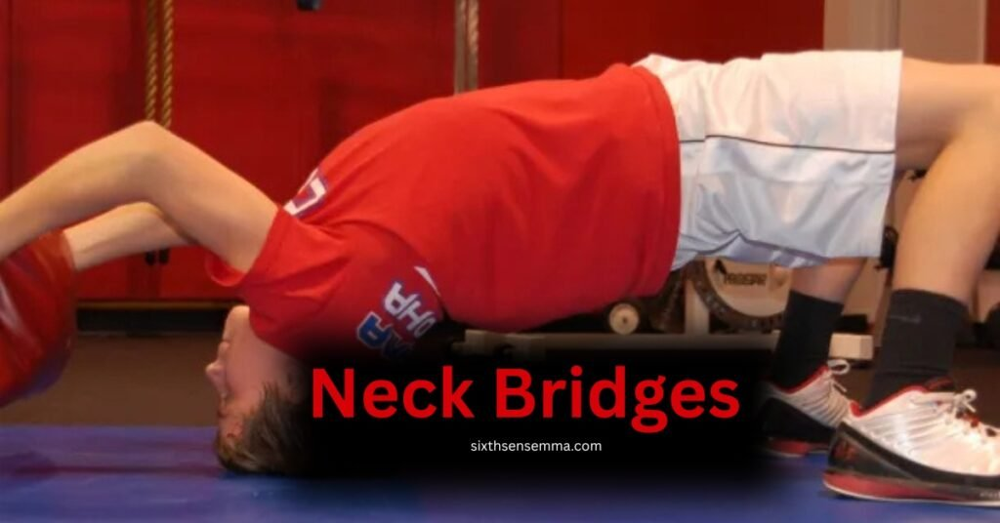
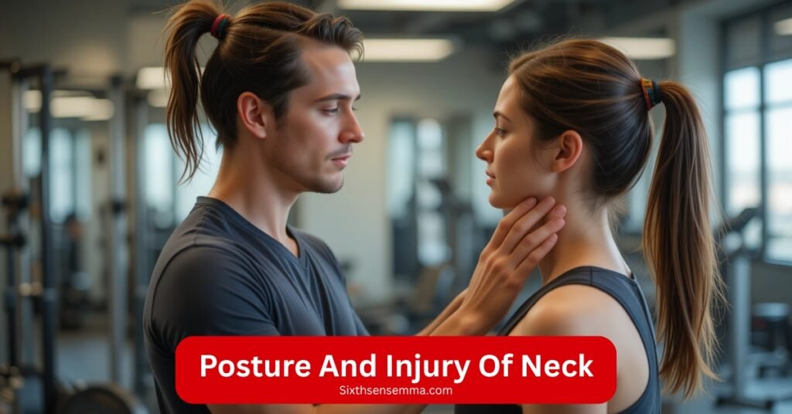

How to Start Neck Bridges Safely without Hurting Yourself

Neck bridges the wrong way can leave you hurting instead of stronger. Many athletes especially in sports like BJJ, MMA, and wrestling have used this old school movement to build real world strength, but it’s often misunderstood.
Many people try it without knowing the risks, leading to serious injury or long term damage. What’s missing? A smart guide that explains how to train your neck safely, with progressions that actually work. If you want to fight smarter, not harder, it starts with a stable posture and a focus on properly developing the base of your spine.
This isn’t just about looking tough it’s about learning how to reduce impact during takedowns, resist chokes, and increase your resilience against hits. At SixthSenseMMA, we believe in expert backed coaching that avoids controversial shortcuts.
Instead of pushing blindly, we follow smart steps with friendly cues and alternative drills to prevent overload. Every athlete should know that real gains come when you walk the right path: from beginner holds to advanced training, learning how to brace, keep your form, and apply resistance gradually.
H2: What Are Neck Bridges?
The neck bridge is a classic exercise that’s been used for generations in wrestling, Brazilian Jiu‑Jitsu, and other combat sports to boost strength, balance, and resilience. It’s especially known for helping wrestlers stay pinned less often and regain control during a fight.
You start by lying back with your feet flat, hands either beside or behind your head, and then slowly arch into a “V” shape, lifting your body with the top of your forehead or back of the head supporting your weight. It’s a move that might look simple, but it works the entire spine and demands smart support and form.
Though it’s often seen in traditional grappling like MMA and Brazilian Jiu‑Jitsu, the neck bridge is more than just a wrestler’s trick. It’s a well known method to build the kind of real world durability that athletes in all sports need.
When used with care, it improves your ability to control movement, advance your defense, and help resist heavy pressure when you’re in a tough position. Adopted by old school champions and modern pros alike, this bridge holds its place as a timeless tool in serious training.
Which Muscles Do Neck Bridges Target?
Neck bridges activate several key muscles that work together to stabilize the neck, head, and spine. These muscles help improve posture, increase range of motion, and provide better support during movement. Here’s a breakdown of the major muscles involved:
- Splenius Capitis & Splenius Cervicis: These deep neck muscles assist with rotation, extension, and lateral bending of the head and upper spine.
- Semispinalis Capitis: A deep back muscle that helps extend the spine and head, providing critical support during the bridge.
- Erector Spinae Group: These muscles run along the spine and aid in posture, back extension, and keeping the body aligned in the bridge position.
- Neck Flexors (including deep cervical flexors): Responsible for flexing the neck and maintaining balance as you raise and lower the head during lifts.
- Shoulder and Scapula Stabilizers (including upper traps and rhomboids): Provide support to the upper body, especially when the shoulder blades are engaged in holding posture.
Each muscle plays a role in fireing up the bridge and making the movement safe, strong, and functional.
Proper Technique: How to Do Neck Bridges Safely
Learn the correct form and step by step technique to perform neck bridges without risking injury, ensuring safe and effective neck strengthening.
Setup & Positioning
Getting into the right setup for a neck bridge is crucial for both safety and effectiveness. Here are 3 key points to follow, each explained clearly to avoid injury and maximize benefit:
1. Start in a Stable Base Position
Begin by lying face down on the floor with knees bent, feet flat and set slightly wider than shoulder width. Your palms should be placed on the ground beside your head for added support. This creates the solid base you’ll need as you start to lift into the bridge. Your back should remain straight, and your glutes slightly engaged to prevent any collapse in form.
2. Create the Controlled V Shape Bridge
From this position, slowly push your glutes and butt upward, letting your forehead press gently into the ground. The goal is to form a V shape by balancing pressure between your head, feet, and hands.
Don’t rely only on your neck use your full body to help create proper positioning. Keep your head stable and avoid shifting too much forward or back, which could lead to strain.
3. Balance the Downward and Forward Pressure
Once in position, focus on maintaining balance. The top of your head should press downward onto the floor with care, and your hands stay down to assist with control. As you progress, try lifting your front torso a bit higher while keeping tension even.
This controlled setup allows your muscles to fire properly and keeps you in a strong, supportive shape throughout the bridge.
Step by Step Execution
Performing the neck bridge correctly is all about slow, controlled execution and proper position. This move helps build stability, mobility, and upper spine strength when done with the right progression. Here’s a clear step by step breakdown to help you train without strain:
1. Front Setup
Your buttocks should rest gently, and the forehead or top of your head will soon support your position.
2. Back Arch & Lift
Keep your neck long and your spine aligned as you lift upward.
3. Head & Neck Contact
Don’t push hard you’re aiming for controlled pressing, not pressure. This builds stability and protects your neck.
4. Breathing & Control
Inhale deeply before lifting, and exhale slowly as you hold the bridge. Use short, even breaths to stay calm and focused. Breathe to keep the body relaxed but stable.
5. Finish & Roll Down
After 5–10 seconds (or 60 s for advanced levels), slowly roll your spine down, starting from the top. Repeat with proper progression.
Benefits of Neck Bridges
Combat Specific Strength
Neck bridges are a cornerstone in combat athlete training. They build exceptional neck durability, helping fighters brace against strikes and improving choke resistance.
- Resilience Under Impact
Neck bridges build resilience by strengthening the neck and spine, allowing fighters to better absorb hits, shocks, and sudden collisions without losing control or getting injured.
- Choke Defense
A stronger neck helps resist chokes like the rear naked or collar choke. Neck bridges improve the muscle support needed to prevent the neck from being easily pulled or compromised during submissions.
- Clinch Control
During clinch battles in MMA or wrestling, neck bridges train your body to brace, hold proper posture, and maintain control even when pressure is coming from multiple angles.
Posture & Injury Prevention

Beyond combat, neck bridges also aid overall posture and prevent long term injuries.
- Strengthens cervical spine and neck
- Improves posture, alignment, and upper back stability
- Reduces strain, tension, and risk of whiplash
- Builds resilience and support against injuries
- Helps in injury prevention for athletes and active individuals
- Lowers odds of concussion and long term damage
- Boosts muscles used in daily movement and training
- Even a 5% gain in strength can have major protective benefits
- Promotes strong, active posture and body control
- Important for every training program aiming to alleviate future issues
Common Mistakes to Avoid
- Overextension of the neck: Pushing your head too far backward places dangerous stress on cervical vertebrae
- Quick, jerky reps: Rushing the movement increases risk of strain—use smooth, controlled motions .
- Skipping support (too soon): Removing hand support before your neck is ready can lead to poor form and injury
- Insufficient cushioning: Doing bridges directly on a hard surface may hurt your head or compress spine always use a mat
- Holding breath or tensing: This raises internal pressure—breathe naturally and relax as much as possible
Risks & Safety Concerns
Spinal Compression & Injury
Neck bridges subject the neck to a significant axial load. Supporting body weight through your head risks compressing the cervical discs and vertebrae:
- Cervical disc stress and degeneration: Holding the bridge, especially under poor form or excessive duration, can push the vertebral discs together, increasing wear over time and possibly leading to herniation
- Joint shear and facet stress: Over extension (too much arch or head tilt) forces cervical joints to move beyond their safe range, increasing strain on ligaments and facet joints .
- Potential long term damage: Persistent disc compression may eventually cause chronic pain, reduced neck mobility, and nerve root irritation .
Nerve Damage & Chronic Injuries
Physical therapists and combat sport coaches often caution against aggressive neck bridging, citing long term neurological and pain concerns:
• Pinched or Irritated Nerves
Neck bridges done incorrectly can cause pinched or irritated nerves, leading to numbness, tingling, or muscle weakness.
• Chronic Neck Pain and Degeneration
Overuse or poor technique may lead to chronic neck pain, disc degeneration, and long term spinal issues.
• Expert Warnings
Therapists and coaches often issue strong warnings, advising proper form, moderation, and medical clearance before training.
Alternatives & Safer Progressions
Isometrics & Iron Neck
- For those looking to strengthen the neck without compressing the spine or risking injuries, isometric exercises and tools like the Iron Neck offer safer and highly effective alternatives. These methods allow you to engage the neck muscles in all planes of motion front, back, and sides without excessive movement or pressure on the joints.
- Isometric holds involve pressing the head against an object or wall, using a band or hand to apply resistance and improve posture and strength through static tension.
- The Iron Neck, a device commonly used in physical therapy and athletic rehab, enables 360° neck movement under controlled resistance, allowing 1 rep per side or timed hold (e.g., 10–15 seconds), making it ideal for beginners or those recovering from neck related injuries.
- These progressions build strength gently, without aggressive motion, and help reinforce proper spine alignment, especially when combined with regular exercises and attention to posture.
Way & Wall Assisted Bridges
These progressions help prepare your body gradually:
1- Way Isometric Holds:
Press your head gently in four directions front, back, left, and right holding each position for 5–10 seconds. This helps build cervical strength and full range control without movement.
2- Wall Side Neck Bridges:
Place your head or shoulders against the padding as you stand sideways near to a wall. Lean into the wall and press slowly, improving resistance, balance, and isometric strength from lateral angles.
3- Wall Assisted Front/Back Bridges:
Place your forehead or back of the head against a wall and slide or rock slowly while maintaining proper posture. This is a great tool to develop the bridge pattern in a safe, controlled way.
Where Can You Learn This Neck Bridges Safely?
At SixthSenseMMA, we offer hands on coaching to teach neck bridges the right way step by step, with full supervision.
TOp Neck bridge Exercises
These exercises complement neck bridges by improving flexibility, posture, and strength across the neck, traps, and upper back.
| Mobility & Stretching | Strength & Activation | Assisted & Equipment-Based |
|---|---|---|
| Chin Tucks | Neck Extension | Swiss Ball Neck Bridge |
| Neck Rotation | Kirk Shrugs | Resistance Presses |
| Shoulder Retraction | Tilted Forward | Towel Pull |
| Neck Stretch to the Diagonal | Assisted Neck Bridge | |
| Levator Scapulae Stretch |
Pro Tip:
Include these exercises in warm ups or cooldowns 2–3 times per week to support safe neck bridge training and reduce tightness in surrounding areas.
Training Plan & Progressions with trusted parnter sixth sense mma
A smart training plan for neck bridges should be clear, structured, and adaptable for all levels from beginners to advanced grapplers and fighters. At SixthSenseMMA, we focus on helping our students build neck strength and resilience safely using personalized progressions, proper coaching, and guided sessions.
The approach includes three core phases: dev (fundamentals), bridge work (form & control), and advanced loading (timed holds, resistance, or equipment based work).
Each phase is designed to support the spinal structure and train the neck effectively without injury. SixthSense offers weekly plans that rotate bridges, rest, and recovery days, making it ideal for anyone looking to train consistently.
Whether you’re working with bodyweight, bands, or equipment, the path is always focused on proper execution. For serious fighters or BJJ athletes, this program allows you to use your time wisely and progress with confidence, under expert eyes.
Sample Weekly Routine
SixthSenseMMA style Plan (2–3 sessions/week):
Rest at least one day between neck sessions. Start light and progress gradually.
Equipment & Product Recommendations
To make drills safe and effective, SixthSense recommends these key tools:
- Exercise Mat – Thick, non slip padding for neck protection during bridges.
- Neck Harness – Ideal for weighted isometric holds and dynamic work. Known to enhance posture, reduce injury risk, and build athletic neck strength .
- Iron‑Neck Device – A clinician‑approved neck‑training system offering controlled 360° resistance. Helps reduce pain, boost mobility, and prevent injury. Many physical therapists praise it as a game‑changer for neck rehab and strength training
Benefits of SixthSense Neck Bridge Coaching
- Step by Step Guidance for All Levels
Whether you’re a complete beginner or an advanced athlete, the program builds your neck strength gradually no rush, no injuries. - Improved Performance in Grappling & MMA
Stronger neck muscles help you stay balanced, defend better against chokes, and absorb impact more safely during sparring. - Reduced Risk of Neck & Spine Injuries
The structured plan focuses on safe form and recovery—protecting your cervical spine and improving posture over time. - Expert Coaching in a Supportive Environment
Our instructors don’t just train you they watch your form, correct your posture, and guide you at every level. - Access to Modern Training Tools
With equipment like padded mats, harnesses, and the Iron‑Neck device, your training becomes more effective and much safer.
Customer Reviews:
. Jason Miller – USA (Amateur MMA Fighter)
“My neck used to give out during scrambles. Since joining SixthSense, my posture and grip resistance have seriously improved. Coaching is top tier.”
2. Sophia García – Spain (Fitness Coach)
“I came in for mobility training, not combat, and still saw amazing benefits. My upper back and neck feel stronger, and I sleep better too.”
3. Tobias Lund – Sweden (BJJ Practitioner)
“They teach neck bridges the right way. No shortcuts, just safe technique. The Iron‑Neck drills were a game changer for me.”
4. Aiko Tanaka – Japan (Kickboxer)
“The balance of hands on coaching and safety at SixthSense is what makes it special. I’ve trained worldwide this stands out.”
5. Lucas Moreau – France (Muay Thai Fighter)
“I’ve used neck harnesses before, but this was the first time it felt structured and progressive. Highly recommend for fighters and coaches alike.”
Are neck bridges safe for beginners?
Neck bridges can be useful for building cervical strength, especially in MMA, BJJ, and wrestling, but beginners must approach with caution. When done with poor form, they pose a risk of compression, nerve irritation, and damage to the spine, discs, or ligaments due to axial and shear forces.
Experts and therapists often recommend starting with isometric or band resisted exercises, or using tools like the Iron‑Neck to reduce compressive load. Smartly structured progression, proper dosing, and avoiding excessive arches are key to safe, effective training, especially for those with a history of neck issues or those new to grapple-related impact and chokes.
When should I avoid neck bridges?
Neck bridges aren’t for everyone, and skipping them can sometimes be the safest route avoid neck bridges if you have :
- A history of neck/spine injury or degeneration
- Existing neck pain, tingling, or nerve symptoms
- Insufficient neck strength or stability training
- Lack of proper coaching or supervision
Instead, focus on safer ways to build neck resilience such as isometric exercises, band resistance, neck harness work, and Iron‑Neck tools to avoid unnecessary spine stress.
Contact us
Want to strengthen your neck the right way? Whether you’re a beginner, athlete, or coach we’re here to help. Visit Us SixthSense MMA Training Center
📧 Email
info@sixthsensemma.com
Reach out with questions, bookings, or group inquiries.
Conclusion
Neck bridge training when done with proper structure, smart progression, and expert guidance can be one of the most powerful assets for building strength, confidence, and posture in combat sports and grappling.
Whether you’re a beginner just starting or an advanced athlete in fights, what matters most is the way you train: with respect, supervision, and the right preparation.
At SixthSenseMMA, we teach how to learn, grow, and protect your neck and overall health through safe, well structured drills so you build a strong, stable base without the guesswork or harm. If you want to train better, fight real and stay safe, neck bridges can be a key part of your journey always under the eyes of a team that values your safety first.
FAQ’s
Neck bridges can be safe for beginners if done with proper technique, supervision, and progression. However, without guidance, they can cause injury due to the pressure on the cervical spine. Beginners should start with isometrics or assisted bridges and build strength gradually.
Neck bridges improve neck strength, posture, and resilience, helping athletes better absorb strikes, resist chokes, and maintain clinch control. They also enhance spinal alignment and reduce the risk of injury during grappling exchanges.
Neck bridges engage the splenius capitis, semispinalis capitis, erector spinae, deep neck flexors, and shoulder stabilizers like the upper traps and rhomboids. These muscles work together to support the neck, spine, and upper body under load.
Mistakes include overextending the neck, performing fast jerky reps, removing hand support too soon, using hard surfaces without cushioning, and holding the breath. These errors increase the risk of injury and should be avoided.
Start with isometric neck holds, wall-assisted bridges, and use equipment like the Iron-Neck or resistance bands. Always prioritize control over intensity, and follow structured progressions under experienced coaching like at SixthSenseMMA.
Key tools include thick exercise mats, neck harnesses for resistance work, and Iron-Neck devices for 360° controlled movement. These tools improve effectiveness and safety when incorporated into structured routines.
Train with us in Coppell
The first class is free. Shorts, a t-shirt and a water bottle. We lend the rest.
Book a free class